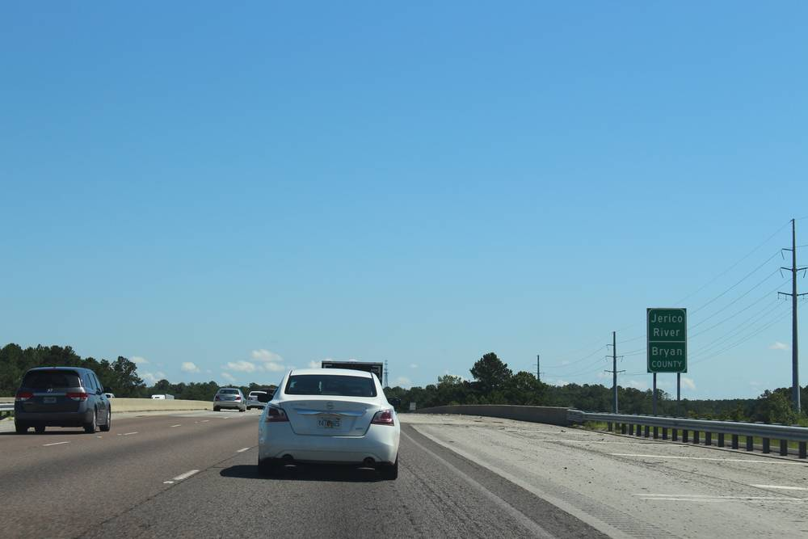

미국 조지아주 코스털 일렉트릭 협동조합, 2011~2013년 전기 쓴 조합원에게 153만4,289.65달러 환원

50달러 이상은 12월 초 수표로, 50달러 미만은 11월부터 전기요금에서 차감…지금까지 2,300만 달러 넘게 돌려줘
미국 조지아주 브라이언·리버티·롱·매킨토시 4개 카운티에 전기를 공급하는 코스털 일렉트릭 협동조합(Coastal Electric Cooperative)이 2011~2013년에 전기를 쓴 조합원에게 153만4,289.65달러를 돌려준다. 조합원이 뽑은 이사회가 10월 28일 회의에서 지급을 정했다. 돌려주는 돈은 출자배당(capital credits)이다.
출자배당은 조합원이 조합에 가진 소유 지분을 나타내며, 한 해 전기요금 합계에 일정한 비율을 곱해 계산한다. 이 지분은 조합 재정이 허락할 때 이사회가 살펴 돌려주기로 정하고, 지금 내야 할 전기요금을 내는 데는 쓸 수 없다. 이사해서 조합을 떠난 옛 조합원도 전기를 쓴 해의 몫을 받을 수 있어, 조합에 우편 주소를 최신으로 알려 두어야 한다.
조합은 지금까지 2,300만 달러 넘는 출자배당을 돌려줬고, 조합원은 2만 명이 넘는다. 50달러 이상은 12월 초 수표로 받고, 50달러 미만은 11월부터 전기요금 청구서에서 깎인다.
시민에너지 관점
이번에 돌려주는 몫은 2011~2013년 사용분이어서, 전기를 쓴 해로부터 13~15년이 지나 지급된다. 코스털 일렉트릭은 전기를 원가로 공급하는 것이 조합의 존재 이유라고 안내하며, 조합원의 지분은 이사회가 재정을 살펴 정할 때까지 장부에 남는다.
출처: WTOC 2026-11-09 Tyler Walls 원문 보기
출처: 코스털 일렉트릭 협동조합 2026-11-18(열람) 출자배당 안내 페이지 원문 보기